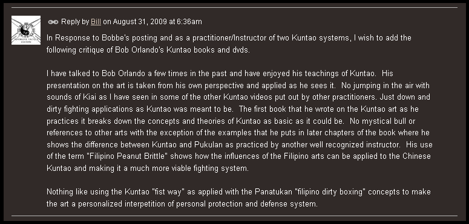

From Willem de Thouars, August 31, 2009.
|
 |
|
©Copyright Bob Orlando, 2009-2016 All rights reserved. |
http://www.OrlandoKuntao.com
E-mail: Ron@OrlandoKuntao.com |
Last update:
Aug. 6, 2016 by Bob Orlando |